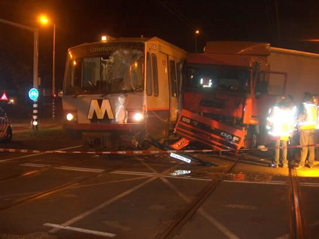
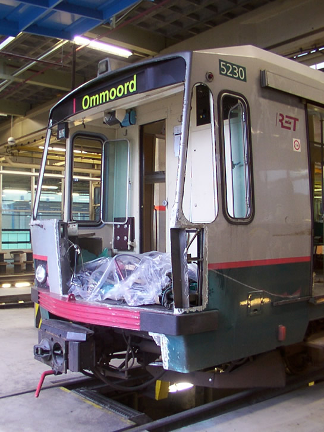

Metrorijtuig 5230 afgestoten
- donderdag 18 juli 2013 19:10
- Geschreven door Tristan
In de avond van donderdag 18 juli 2013 is metrorijtuig 5230 op transport gesteld. Het rijtuig zal via de haven van Zeebrugge naar de Turkse stad Bursa getransporteerd worden, alwaar het met 24 andere SG2-rijtuigen een tweede leven krijgt. 19 andere SG2-rijtuigen zullen de komende tijd ook afgestoten worden, vermoedelijk gaan deze naar de Duitse tussenhandelaar.
In februari van het jaar 1982 werd het rijtuig afgeleverd bij de RET. In mei 1982 is het in gebruik genomen.

Een detailopname van metrorijtuig 5230 op station Kralingse Zoom. Achter 'GES' (geschilderd) en 'REV' (revisie) staan nog geen data

Het metrorijtuig met M-monogram op het toenmalige eindpunt De Tochten
In 1999 werd het rijtuig onderworpen aan de midliferevisie in de centrale werkplaats aan de Kleiweg.

Metrorijtuig 5230 staat na afloop van de midliferevisie te stralen op de roltraverse
Op 8 november 2004 raakte metrorijtuig 5230 zwaar beschadigd tijdens een aanrijding met een vrachtwagen op de kruising President Rooseveltweg in de wijk Ommoord. De metrotrein, bestaande uit de rijtuigen 5230, 5215 en 5229 was vertrokken uit station Graskruid, bereed de overweg en ramde een Macedonische vrachtwagen. Het rijtuig kwam halverwege de overweg tot stilstand.
Als gevolg van de aanrijding raakte de B-cabine van metrorijtuig 5230 aanzienlijk beschadigd
Het rijtuig is hersteld in de lijnwerkplaats van remise ’s-Gravenweg. Onder andere een gedeelte van de beplating in de kop, alsmede de voorruit en de stuurtafel, waren dusdanig beschadigd geraakt dat deze vervangen moesten worden.

De constructie van de cabine werd voor een groot gedeelte vervangen

Tijdens een winterse nacht aan het einde van 2009 staat metrorijtuig 5230 (links) op spoor 361 van het emplacement 's-Gravenweg haar inzet af te wachten. Links daarvan is nog een gedeelte van een RSG2-rijtuig te zien